Vietnamese Spring Rolls
A cool summertime appetizer, delicious dipped in one or both of the sauces.
Ingredients
- 2 oz. rice vermicelli
- 8 rice wrappers (8.5-inch diameter)
- 8 large cooked shrimp peeled, deveined, and cut in half
- 1 1/3 tbsp chopped fresh Thai basil
- 3 tbsp chopped fresh mint leaves
- 3 tbsp chopped fresh cilantro
- 2 leaves lettuce, chopped
- 4 tsp fish sauce
- 1/4 cup water
- 2 tbsp fresh lime juice
- 1 clove garlic, minced
- 2 tbsp white sugar
- 1/2 tsp garlic chili sauce
- 3 tbsp hoisin sauce
- 1 tsp finely chopped peanuts
Directions